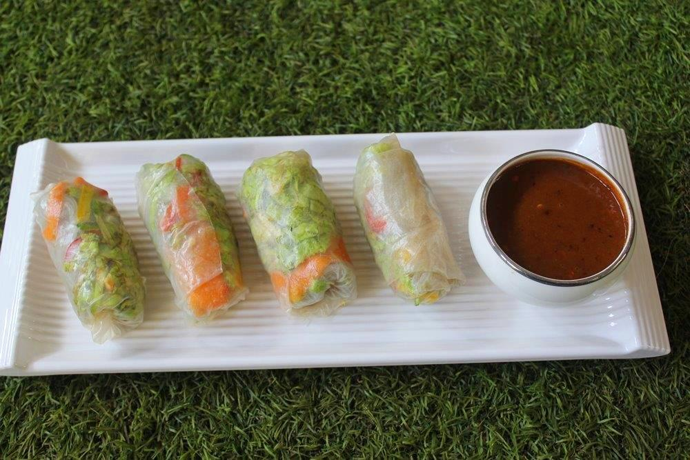

Fresh Spring Rolls with Dipping Sauce

This dish is also known as "Summer Rolls."
Ingredients:
- 6 spring roll wrappers
- 1 cup shredded leaf lettuce
- 12 medium shrimp, cooked and shelled
- 1/2 cup peeled, seeded, chopped cucumber
- 1 julienned medium carrot
- 1/3 cup chopped cilantro
Dipping Sauce:
- 3 tbsp mirin
- 1 tbsp light soy sauce
- 1 tbsp white vinegar/rice vinegar
- 1/4 tsp grated ginger (optional)
Directions:
- Soak spring roll wrapper in a bowl of cool water until limp, then lay out flat.
Place 1/6 of lettuce down middle of wrapper, then 1/6 of shrimp, cucumber, carrot, and cilantro.
Fold over each end and tightly roll the wrapper around the contents.
Moisten at seam, then press to close.
- Lay on plate, cover with moist paper towel and refrigerate until ready to serve.
Slice rolls in two and serve with dipping sauce.
- To make dipping sauce: Combine mirin, soy sauce, vinegar, and ginger in a small bowl.
Recipe Source
Back to Home